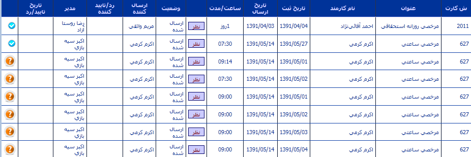
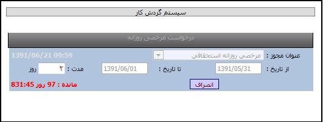
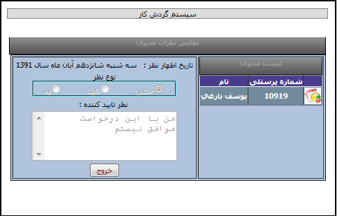

بازرسی و مشاهده درخواست
بازرس کیست ؟
بازرس درواقع فردی است که درخواستهای پرسنل را مشاهده می کند تا در هنگام خروج از شرکت کنترل داشته باشد .
مراحل کار جهت بازرسی :
بازرس با انتخاب گزینه بازرسی و مشاهده درخواست می تواند لیست درخواستها را مشاهده نماید اجزای درخواستها شامل :
در این لیست (مطابق تصویر)شماره کارت درخواست کننده/عنوان درخواست /نام پرسنل درخواست کننده/ تاریخ ثبت درخواست /تاریخ ارسال درخواست / مدت درخواست /نظر اعلام شده مدیر/وضعیت درخواست، تایید/رد/ارسال شده /فرد ارسال کننده /فرد تایید کننده یا رد کننده/مدیر مربوطه /تاریخ رد یا تاییددرخواست/گزینه امکان رویت وپاراف نمودن درخواست بوسیله بازرس (با تیک زدن درخواست مورد نظر) قابل مشاهده است.
نکته : هنگامیکه بازرس با کاربری خود وارد سیستم می شود علاوه براینکه می تواند کار بازرسی و مشاهده درخواست را انجام دهد امکان ثبت درخواست برای خود را نیز دارد (مشابه تصویر)-جهت توضیحات درخواستها رجوع شود به فایل پرسنل سازمان


